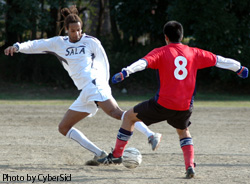
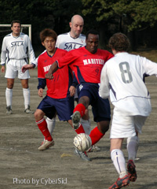

Sun March 19th 2005. OiFuto Just like Italy in the war, the second half was a lot better than the first. Sala put down a determined Martitzio with two splendid dozes of liquid football at Oifuto on
Saturday afternoon.
|  |
'Bigman' Jody, weaving his silky skill for the last time with Sala FC? |
It was not a game to remember by any stretch of the imagination, with a pitch more suited to sunbathing(There were rumours that the referee had to remove several towels from the pitch before kick-off, left by
Germans who had got there early and staked a claim. Guido refused to comment if one of them may have been his!) Martitzio however were not there for a holiday. The Roppongi based team have been something of a
Sala gift horse in recent times and came out hard to make sure they wouldn't end up on the end of another hiding.
Sala looked comfortable if unthreatening in the opening spell, the unorthodox midfield pairing of Scotty and Jody controlling most of the play without really keeping any pressure in the final third. The defense, as
it did all game, looked solid, and it seemed that the opening goal was surely just a matter of time. A matter of time it was to be, but a much longer one than had been anticipated.
Charles' petulance, some foul throws and a couple of speculative long shots aside, the first half bore little fruit. The second half didnft start out any better. New French recruit Xavier replaced Charles at half
time and went onto the left wing allowing Toby to move upfront. Brian G, back from a soujorn in his homeland, took over from Sala bar's own bartender/footballer extraordinaire Naoki.
The tempo remained the same, with Martitzio very deconstructive in the middle of the park. The first real chance of the game fell to a Martitzio striker, who put clean through tried to lob Brian Harlow, the keeper
though just did enough to put him off and it was cleared off the line by Toby.
Mid-way through the second period the tide began to change. Giles and Toby began to find a lot of space out right, and new boy Xavier got to work on the left as perhaps superior fitness levels came into play. Toby
served up Dhugal a chance at the near post which the Aussie thrashed at the keeper twice only to be denied on both occasions. The ingredients were right, they just weren't using the same recipe. And yet the proof
of the pudding is in the eating!
|  |
John Ologbosere gets the ball under control as Paul Clarke shepherds the defence. |
It was after about 60 minutes that Toby picked up on a lax throw by the opposition and got to the byline on the right hand side. His cross was perfect for Dhugal who had made a great run to the near post. The
header flew solidly into the top right corner from about six yards. 1v0.
Less than ten minutes later, Sala went two up. Scotty picked off a loose ball in the midfield and released Toby who tried to nip between two defenders only to find himself in an old fashioned sandwich on the edge
of the box (Records show that the last time a foul was given for a sandwich was in 1983, on John Wark of Ipswich Town) The ball rolled onto Jody who was desperately seeking a goal in his last outing for Sala, as he
raised his leg to shoot however, the referee decided not to play an advantage. No one was happier about this than Toby, who stepped up and curled a beautiful left footer over the wall into the left hand corner of
the net. 2v0.
Mr Brooke-Smith be warned!! At this point the game was effectively over and although Maritizio did pull one back in the final seconds, nobody could accuse the defence of losing concentration. The goal in question
was an absolute pile driver from the angle of the box that rocketed into the top corner. 2v1.
A good performance from all involved, although personally I thought that all of our first touches could do with a bit of work. As big Ron once pointed out though, it can be an advantage.
Clive: Carlton Palmer covered every blade of grass on the pitch tonight Ron! Ron: You'd cover every blade of grass too with a first touch that shit.
No man of the match again, but a couple of shout outs. Firstly, the Big man. The big man has got a job with the FBI and will be busting evildoer ass all over America. Or something like that. Anyway Jody is
heading back to the States, and I'm sure Ifm not the only one *sniff* who will miss him. With his unusual height and riverdancing feet of fire, he has broken the hearts of many a TML team. Bloh bloh (That's the
shooting in the air thingy noise) Take care, and good luck, cos with a face like yours your gonna need it! Secondly, shout out to Xavier for coming along and playing well in his first game. And that, is that.
Roddy Charles Petulance in the face of reason.RC |